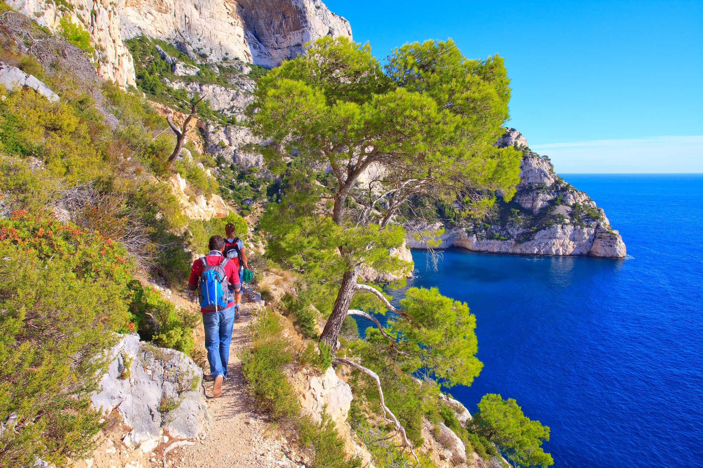
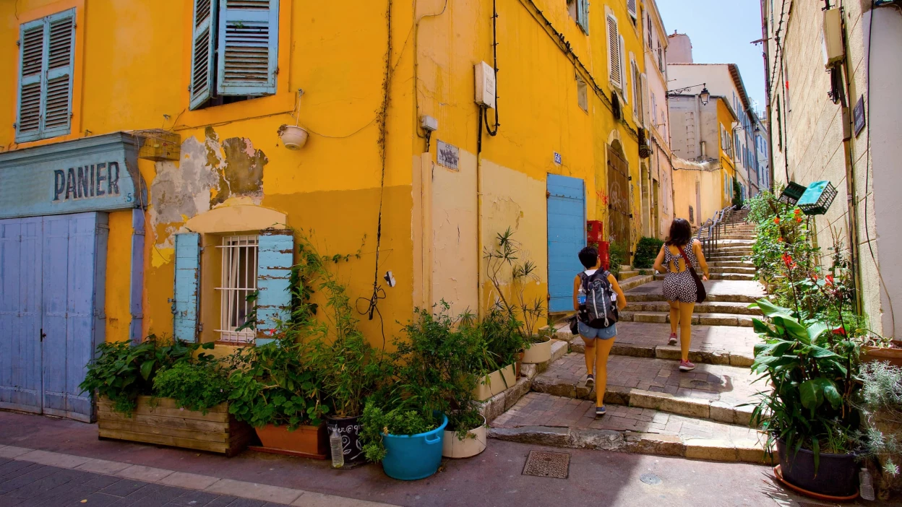
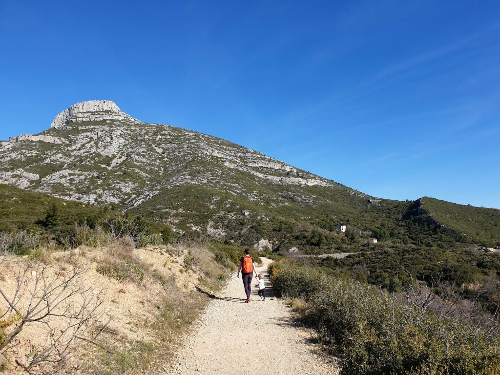
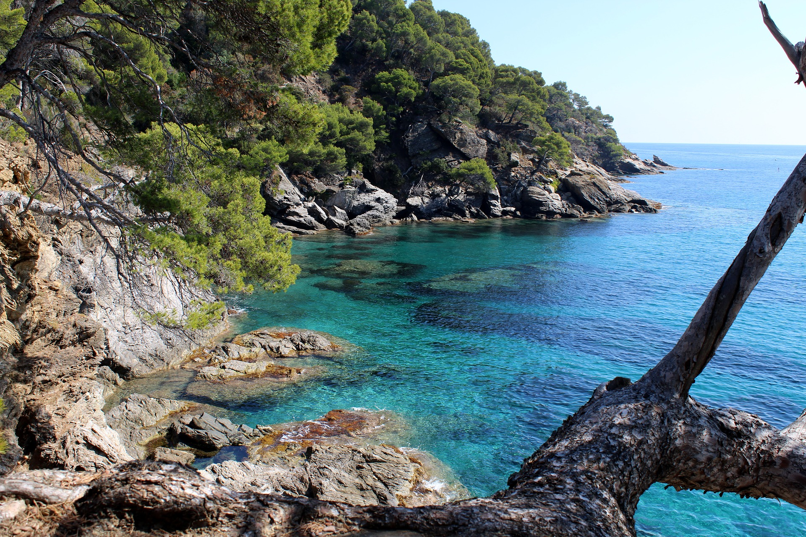
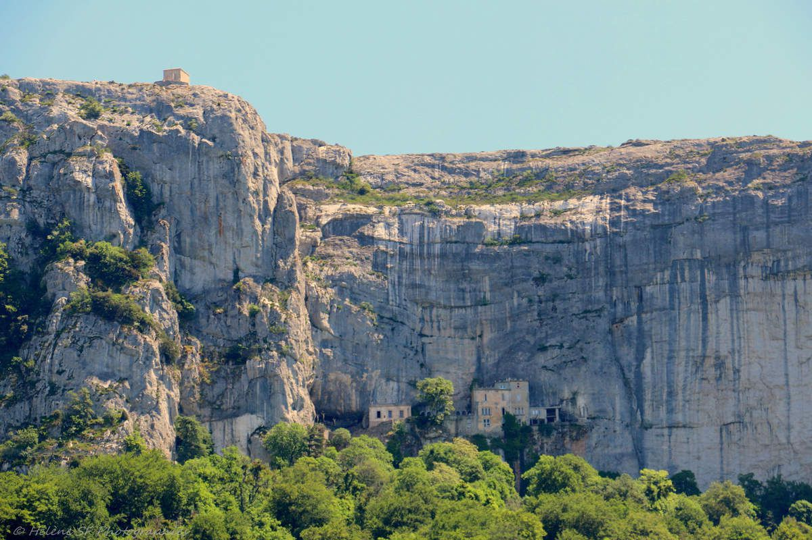
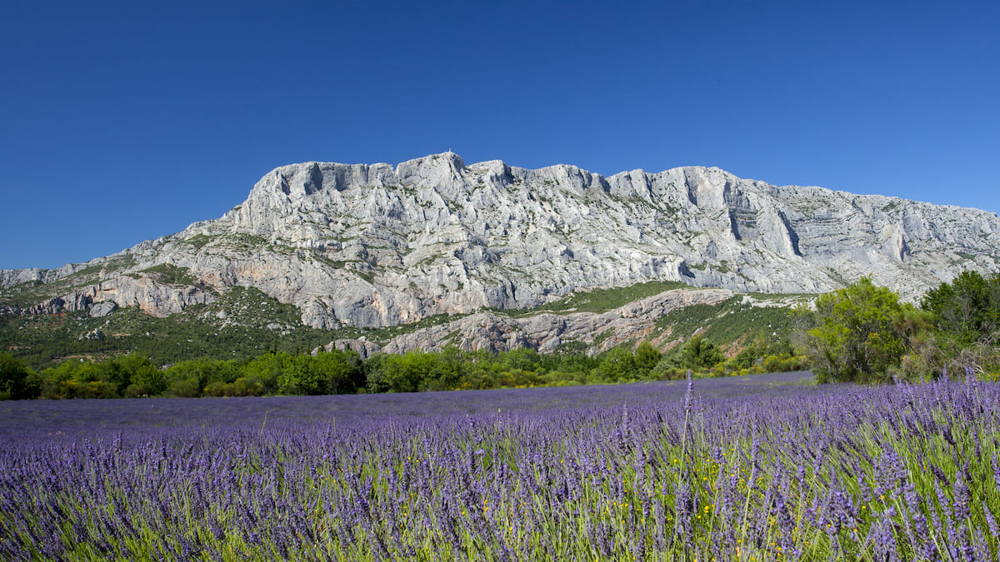

Etes-vous prêt(e) à découvrir des spots de randonnées uniques ?

Randonnées à Marseille et aux alentours
Marseille et ses alentours regorgent de beaux sentiers de randonnée propices à la découverte de la nature provençale et méditerranéenne. Un climat privilégié, des paysages de bord de mer à couper le souffle et une Provence qui a inspiré peintres et écrivains. Les espaces naturels qui entourent la ville de Marseille sont riches et variés. Massifs, calanques, forêts ou garrigues offrent à la Provence un paysage unique en France. La vue surprenante des panoramas et la beauté saisissante de ces espaces naturels, font de la cité phocéenne, un lieu très prisé pour les activités pédestres. De nombreux parcours balisés autour de Marseille et ses environs permettent de découvrir ces paysages exceptionnels. Ces itinéraires s’adressent à tous les niveaux : des simples balades pour débutants aux parcours pour randonneurs confirmés, en passant par les trekkings pour les plus sportifs ou les grimpeurs.
Choisir sa balade sur Marseille
Randonnées dans les Calanques
De nombreux circuits de randonnée pour tous les niveaux sont accessibles à Marseille. Bien entendu, il y a le Parc National des Calanques reconnu pour sa beauté unique et son eau turquoise. C’est un espace naturel protégé qu’il faut préserver et découvrir en toute saison. L’air marin, le vent dans les cheveux, l’horizon sur la mer donnent une sensation de liberté. Mais attention à la réglementation !
Randonnée vers le sommet de Béouveyre
Randonnée vers Sormiou depuis les Baumettes
Randonnée au Frioul sur l'île de Pomègues
Randonnée au Frioul sur l'île de Ratonneau
Randonnées urbaines à Marseille
Grâce à son territoire vaste, Marseille propose aussi des randonnées urbaines. De véritables pépites sont à découvrir à l’intérieur même de la ville bordée par la mer tels que le Vallon des Auffes, Malmousque, ou encore le Panier. Il est possible de marcher 3,7 kilomètres le long de la Corniche Kennedy offrant une vue spectaculaire sur la rade. Le sentier métropolitain de randonnée pédestre GR2013 fait découvrir les quartiers de Marseille du Sud-Est au Nord-Ouest en mettant en valeur l’habitat des hommes, les traces d’activité humaine, les zones naturelles.
Randonnée dans les collines du Roucas Blanc
Randonnée dans les Traviolles du quartier Vauban
Balade du chineur dans le quartier des antiquaires
Randonnée le long de la Corniche Kennedy
Balade dans les nouveaux quartiers de Marseille
Randonnée Vieux-Port vers Notre Dame de la Garde
Balade à la découverte du quartier de Noailles
Balade sur la rive sud du Vieux Port
Randonnée Notre-Dame de la Garde, Roucas-Blanc, Corniche
Balade sur les traces de l'histoire maritime de la Joliette
De St Louis au Vieux-Port de Marseille
Randonnée vers le sommet de Béouveyre
Choisir sa balade autour de Marseille
Grâce à son territoire vaste, Marseille propose aussi des randonnées urbaines. De véritables pépites sont à découvrir à l’intérieur même de la ville bordée par la mer tels que le Vallon des Auffes, Malmousque, ou encore le Panier. Il est possible de marcher 3,7 kilomètres le long de la Corniche Kennedy offrant une vue spectaculaire sur la rade. Le sentier métropolitain de randonnée pédestre GR2013 fait découvrir les quartiers de Marseille du Sud-Est au Nord-Ouest en mettant en valeur l’habitat des hommes, les traces d’activité humaine, les zones naturelles.
Randonnées dans les collines de Pagnol
Marseille est entourée de massifs naturels tels que le massif du Garlaban vers Aubagne qui permet aux randonneurs de partir sur les traces de Marcel Pagnol, ou le massif de l’Etoile, le massif de la Nerthe, la chaîne Saint Cyr qui permettent des balades alternatives, offrant toujours un beau panorama sur la ville et les environs.
Randonnées sur la Côte Bleue
A découvrir également pour les amateurs de randonnée, la Côte Bleue, moins connue que les calanques mais tout aussi belle et pittoresque. De jolies randonnées face à Marseille et au bord de mer sont à faire, plus accessibles et faciles que celles du massif des Calanques.
Randonnées dans le Massif de la Sainte-Baume
Il y a aussi le massif de la Sainte Baume, vrai bijou de Provence qui s’impose parmi les autres reliefs avec sa roche calcaire de 1100 mètres de haut. Elle est occupée en partie par une grande forêt de feuillus, donnant un peu plus de fraîcheur, d’humidité et de protection au vent. Une petite route le traverse qui permet de rejoindre le col de l’Espigoulier avec à son sommet, une vue splendide sur Marseille et la mer.
Randonnées dans le massif de la Sainte-Victoire
La “montagne” Sainte Victoire est chérie des Aixois. Elle marque le début du Pays d’Aix. Promenez-vous dans les paysages sublimes peints par Paul Cézanne, vous ne pourrez pas plus vous sentir dans le cœur de la Provence.
